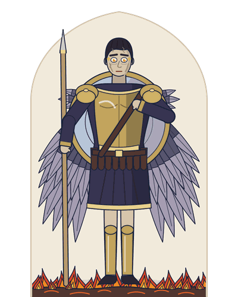

Free sample unit · Paradise Lost study guide: Lines 242 to 282: “Better to reign in Hell” on the burning plain
This is Unit 6 of the Paradise Lost study guide, complete and free to read online: Satan’s “Better to reign in Hell” speech, lines 242 to 282 of Book I, with a plain modern English line under every line of Milton and word notes, then a model critical note on whether Satan is the hero, three short answers, a model context answer and five objective questions, as the book gives them, with the keys from the end of the book.

Unit 6 · Lines 242 to 282
“Better to Reign in Hell”: The Plain of Fire
Lines 242 to 282 · The burning plain of Hell
Landed on the burning plain, Satan greets Hell as its new possessor; Beelzebub says his voice will revive the fallen host.
Unit 6 · Lines 242-282 (41 lines) · Essays 1, 4, 6, 3
Satan on the burning ground of Hell, drawn for this book from Milton’s description.
- He brings “A mind not to be changed by place or time.” (253).
- Power above obedience: “Better to reign in Hell than serve in Heaven.” (263).
- He greets his new home: “Hail, horrors! hail, / Infernal world!” (250-251).
Examiners ask
- Is Satan the hero of Book I? (Frequently set) Answer: Critical note
- What does Satan mean by “The mind is its own place” (254)? Answer: Short answer 1
- Explain lines 254 to 263 with reference to the context. Answer: Context answer
Defiance at its grandest, spoken from the floor of Hell.
Context
Where we are. Satan has just risen from the burning lake and flown to the dry land of Hell (221 to 238). Beelzebub follows him. Both boast that they escaped by their own strength (239 to 241). Yet the narrator has already told us that Heaven allowed Satan to rise (210 to 213). Now Satan looks round and speaks to Beelzebub. His speech (242 to 270) moves in three steps: grief for Heaven, defiance of God, and a plan to wake the host. Beelzebub’s short reply (271 to 282) agrees with the plan. He praises Satan’s voice as the army’s signal in battle.
The text: Lines 242 to 282 with modern English
The whole passage, as the book prints it: every line of the text with its line number, a plain modern English line beneath it, and word notes after each passage.
Satan Greets His New Kingdom Lines 242 to 270
“Is this the region, this the soil, the clime,”
“Is this the region, this the ground, the climate,”
Said then the lost Archangel, “this the seat
The lost Archangel then said, “this the home
That we must change for Heaven?—this mournful gloom
That we must take in exchange for Heaven? This mournful darkness
For that celestial light? Be it so, since he
In place of that heavenly light? Let it be so, since he
Who now is sovereign can dispose and bid
Who is now ruler can decide and command
What shall be right: farthest from him is best
What shall be right: farthest from him is best,
Whom reason hath equalled, force hath made supreme
Our equal in reason, whom force has made supreme
Above his equals. Farewell, happy fields,
Above his equals. Goodbye, happy fields,
Where joy for ever dwells! Hail, horrors! hail,
Where joy lives for ever! Welcome, horrors! Welcome,
Words242 clime: climate, region · 243 Archangel: an angel of the highest rank · 246 dispose: decide, arrange as he wishes · 250 Hail: a word of greeting or welcome
Infernal world! and thou, profoundest Hell,
World of Hell! And you, deepest Hell,
Receive thy new possessor—one who brings
Receive your new owner, one who brings
A mind not to be changed by place or time.
A mind that place or time cannot change.
The mind is its own place, and in itself
The mind is a place of its own, and within itself
Can make a Heaven of Hell, a Hell of Heaven.
It can make Hell into Heaven, and Heaven into Hell.
What matter where, if I be still the same,
What does it matter where, if I am still the same,
And what I should be, all but less than he
And what I ought to be, hardly less than he
Whom thunder hath made greater? Here at least
Whom thunder has made greater? Here at least
We shall be free; th’ Almighty hath not built
We shall be free; the Almighty has not built
Here for his envy, will not drive us hence:
Anything here that he would envy, and will not drive us out:
Words251 profoundest: deepest
Here we may reign secure; and, in my choice,
Here we may rule in safety; and, in my judgement,
To reign is worth ambition, though in Hell:
To rule is worth ambition, even in Hell:
Better to reign in Hell than serve in Heaven.
It is better to rule in Hell than to serve in Heaven.
But wherefore let we then our faithful friends,
But why then do we let our faithful friends,
Th’ associates and co-partners of our loss,
The companions and partners in our loss,
Lie thus astonished on th’ oblivious pool,
Lie so stunned on the lake of forgetfulness,
And call them not to share with us their part
And not call them to share their part with us
In this unhappy mansion, or once more
In this unhappy home, or once more
With rallied arms to try what may be yet
With forces gathered again to try what may still be
Regained in Heaven, or what more lost in Hell?”
Won back in Heaven, or what more may be lost in Hell?”
Words266 oblivious pool: lake that causes forgetfulness · 268 mansion: dwelling place, home
Beelzebub’s Reply Lines 271 to 282
So Satan spake; and him Beelzebub
So Satan spoke; and to him Beelzebub
Thus answered:—“Leader of those armies bright
Replied like this: “Leader of those bright armies
Which, but th’ Omnipotent, none could have foiled!
Which no one but the Omnipotent could have defeated!
If once they hear that voice, their liveliest pledge
If they once hear that voice, their strongest promise
Of hope in fears and dangers—heard so oft
Of hope in fears and dangers, heard so often
In worst extremes, and on the perilous edge
In the worst crises, and on the dangerous edge
Of battle, when it raged, in all assaults
Of battle, when it raged, in every attack
Their surest signal—they will soon resume
Their surest signal, they will soon take up
New courage and revive, though now they lie
Fresh courage and recover, though they now lie
Grovelling and prostrate on yon lake of fire,
Lying flat and face down on that lake of fire,
As we erewhile, astounded and amazed;
As we did a while ago, stunned and bewildered;
No wonder, fallen such a pernicious height!”
No wonder, having fallen from such a ruinous height!”
Words274 pledge: promise, guarantee · 281 erewhile: a short time ago · 282 pernicious: ruinous, destructive
Critical note: is Satan the hero of Book I?
Is Satan the hero of Book I? Discuss with reference to his speech on the plain. (Frequently set)
Critical note · about 300 words
Answer. Satan’s speech on the plain is the strongest case for calling him the hero of Book I. It also shows why many readers resist that view. Whether Satan is the hero is an open debate, so both sides need a hearing.
One view sees heroic courage here. Satan has lost Heaven, yet he greets his new home with a shout: “Hail, horrors! hail, / Infernal world!” (250-251). He calls himself Hell’s “new possessor” (252). He claims “A mind not to be changed by place or time.” (253). He does not bow, and he remembers his fallen followers (264 to 267). He is like the hero of an epic, a long poem that tells the deeds of heroes in a grand style. He faces ruin without fear. His lines are grand, clear and easy to remember, and readers have long felt their pull.
Another view reads the same lines as pride speaking. His farewell shows what he has thrown away: “Farewell, happy fields, / Where joy for ever dwells!” (249-250). He claims to be “all but less than he / Whom thunder hath made greater” (257-258): nearly God’s equal, beaten only by thunder. The claim is pride speaking. His famous choice, “Better to reign in Hell than serve in Heaven” (263), puts power above goodness. His boast of freedom also carries irony, saying one thing and meaning another, or an outcome opposite to what is expected. The narrator has just told us that Satan rose only by “the will / And high permission of all-ruling Heaven” (211-212).
Milton’s design keeps both readings alive. He gives Satan a grand speech. Then he frames it with narration that judges it. Beelzebub’s praise of “that voice” (274) shows that Satan’s power lies in words. A strong answer weighs the speaker’s courage against the charge of self-deception, and labels each reading as a view.
Verdict: one view hears a hero, another hears pride; the open debate is itself the answer.
321 words
Short answers
What does Satan mean by “The mind is its own place” (254)?
5 marks · short answer
Answer. Satan means that a strong mind decides its own happiness, whatever place it is in. First, he says the mind “Can make a Heaven of Hell, a Hell of Heaven.” (255). The terms swap places in a neat pattern, so the line sounds like a proven rule. Second, the claim lets him face Hell without despair. He asks what the place matters if he is still the same (256). Losing Heaven, he suggests, takes nothing from him. Finally, the claim is open to doubt. The same speech began with grief for “that celestial light” (245), so Hell already weighs on his mind. One view finds a brave idea here. Another view finds a fallen angel talking himself out of his loss. Either way, the line is Satan’s own creed, spoken in his speech on the plain.
136 words
Common mistake
The mistake. Reversing the order of line 255, or giving “The mind is its own place” to the narrator or to Milton.
The correction. The words are Satan’s (254-255), and the order is “a Heaven of Hell, a Hell of Heaven.” (255).
Why it costs marks. A wrong quotation or a wrong speaker is a factual error, and examiners reward accuracy.
Why does Satan prefer to reign in Hell?
5 marks · short answer
Answer. Satan prefers to reign in Hell because there he is free from God and can rule. First, he believes God has no reason to want Hell. He says that “th’ Almighty hath not built / Here for his envy” (259-260), so the fallen angels will not be driven out. Second, Hell gives him a throne. In Heaven he must serve, but here he may “reign secure” (261). For Satan, power matters more than place or joy. Finally, the speech builds to line 263, where “reign” and “Hell” stand against “serve” and “Heaven”. The balance makes his choice sound noble and firm. Yet his freedom is uncertain, because the narrator has said that Heaven let him rise (210 to 213). The line shows Satan’s pride: he would rather rule in pain than obey in joy.
133 words
How does Beelzebub answer Satan, and what has Satan decided?
5 marks · short answer
Answer. Beelzebub answers with praise and agreement, and Satan has decided to wake the fallen host. First, Satan ends his speech with a question. He asks why they leave their “faithful friends” (264) lying stunned on the lake. He proposes to rally them, to see what may be won back in Heaven or lost in Hell (267 to 270). Second, Beelzebub greets him as “Leader of those armies bright” (272). He admits that only God could have beaten that army (273). Finally, he says the angels will revive once they hear Satan’s voice, their signal in every battle (274 to 279). They lie stunned now, as the two chiefs did, after so great a fall (279 to 282). The reply turns Satan’s question into a plan. At once Satan moves toward the shore (283 to 284).
135 words
Context answer
Lines 254 to 263
The mind is its own place, and in itself
Can make a Heaven of Hell, a Hell of Heaven.
What matter where, if I be still the same,
And what I should be, all but less than he
Whom thunder hath made greater? Here at least
We shall be free; th’ Almighty hath not built
Here for his envy, will not drive us hence:
Here we may reign secure; and, in my choice,
To reign is worth ambition, though in Hell:
Better to reign in Hell than serve in Heaven. (254-263)
Reference to context · 200 to 250 words
Answer.
Reference. These lines come from Book I of Paradise Lost by John Milton. Satan speaks them to Beelzebub on the burning plain of Hell, in his speech of lines 242 to 270.
Context. Satan has just risen from the burning lake and landed on dry ground. He has said farewell to Heaven’s “happy fields” (249) and greeted Hell as its “new possessor” (252). Just after these lines he asks why their followers still lie on the lake (264 to 266). Beelzebub then replies (271 to 282).
Explanation. Satan says the mind makes its own world. A strong mind can turn Hell into Heaven, or Heaven into Hell. The place does not matter if he stays himself, though God, armed with thunder, is now greater. In Hell, at least, the fallen angels are free. God built nothing here that he would envy, so he will not drive them out. So they can rule in safety, and ruling is worth wanting, even in Hell. It is better to be a king in Hell than a servant in Heaven. The technique is balance and repetition. Line 255 swaps its terms, and line 263 sets “reign” against “serve” and “Hell” against “Heaven”. The word “Here” comes three times (258, 260, 261), and each one drives home his claim to the place.
Critical comment. The passage gives Satan’s creed of pride in lines that sound like proverbs. It sits at the heart of the debate over whether Satan is the hero.
246 words
Objective questions
Choose one answer. The keys, from the end of the book, follow the questions.
26. Who says “Better to reign in Hell than serve in Heaven.” (263)?
(a) Beelzebub
(b) Satan
(c) the narrator
(d) Moloch
27. Statement I: Satan calls Beelzebub “Leader of those armies bright” (272).
Statement II: Satan says the Almighty will drive the fallen angels out of Hell.
(a) Both statements are correct
(b) Both statements are incorrect
(c) Statement I is correct, Statement II is incorrect
(d) Statement I is incorrect, Statement II is correct
28. Assertion (A): Satan says Hell is the place “Where joy for ever dwells!” (250).
Reason (R): Satan says farewell to the “happy fields” (249) of Heaven.
(a) Both A and R are true, and R explains A
(b) Both A and R are true, but R does not explain A
(c) A is true, but R is false
(d) A is false, but R is true
29. Put these events in the order they happen: I. Satan says farewell to the happy fields of Heaven.
II. Satan says it is better to reign in Hell.
III. Satan asks why their friends still lie on the pool.
IV. Beelzebub says the host will revive at Satan’s voice.
(a) I, II, III, IV
(b) II, I, III, IV
(c) I, III, II, IV
(d) II, III, I, IV
30. According to Satan, what has made God “supreme” (248) above his equals?
(a) reason
(b) goodness
(c) force
(d) the choice of the angels
Keys
26. (b) Satan. Satan says it near the end of his speech on the plain, which runs from line 242 to line 270 (263).
27. (b) Both statements are incorrect. Beelzebub gives Satan that title (272), and Satan says God “will not drive us hence” (260).
28. (d) A is false, but R is true. The joy belongs to the happy fields of Heaven that Satan is leaving, not to Hell (249-250).
29. (a) I, II, III, IV. The farewell comes at line 249, the choice at 263, the question at 264 to 266, and Beelzebub’s answer at 274 to 279.
30. (c) force. Satan says reason made them equal, but “force hath made supreme” (248).
This was Unit 6 of Paradise Lost, Book I: Exam Edition
The full book has 17 units like this one, 12 model essays, 125 objective questions and a bank of 40 key passages. The free PDF sample has this unit as it appears in the book, with the title page, A Note from the Author and the contents.